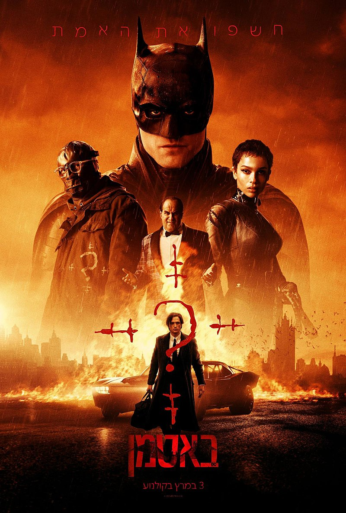

אקשן
BATMAN
עיבוד חדש ומסקרן מתמיד לגיבור העל המפורסם בעולם. רוברט פטינסון בתפקיד ברוס ווין/באטמן המנסה
לפתור סדרה של תעלומות מסוכנות במיוחד שמשאיר איש החידות ברחבי העיר גות'האם. כאשר העיר
נכנסת לכאוס וכל בכירי הממשל והמשטרה בסכנת חיים, באטמן יצטרך את כל העזרה שיסכים לקבל מקאטוומן המסתורית
משרתו הנאמן אלפרד , והאיש היחיד הראוי לאמון במשטרה ג'ים גורדון
Blacklight
סוכן צללים מיומן אשר נתקל בבעיות של אמון, זהות ובסכנה במתן כוח בלתי מרוסן לאנשים בעמדות מפתח, יביאו אותו לקצה גבול
היכולת במותחן האקשן החדש מאת הבמאי מארק וויליאמס, "סוכן הצללים". טראוויס בלוק (ליאם ניסן), חי ונלחם בצללים. בלוק
הוא פרילנסר, "פותר בעיות" ממשלתי בלתי רשמי, אדם מסוכן אשר משימותיו כללו חילוץ סוכנים חשאיים מסיטואציות מסוכנות.
כאשר בלוק חושף שתכנית סודית בשם 'מבצע אחדות' פוגעת באזרחים מן השורה מסיבות שידועות אך ורק לבוס שלו, מנהל ה-
FBI רובינסון (איידן קווין), הוא מגייס את עזרתה של עיתונאית (איימי רבר למפמן), אך עברו וההווה שלו מתנגשים חזיתית כאשר
בתו ונכדתו בסכנה. עתה בלוק נדרש להציל את האנשים האהובים עליו ולחשוף את האמת בעבור סיכוי לגאולה.אף אחד ושום
דבר לא בטוח כאשר סודות מוסתרים בין הצללים.
Uncharted

פריקוול למשחק המחשב באותו שם. ניית'ן דרייק הצעיר והפיקח יוצא למסע ציד האוצרות הראשון שלו יחד עם שותפו
השנון ויקטור "סאלי" סאליבן. השניים יוצאים למרדף מסוכן אחר "האוצר הגדול ביותר שמעולם לא נמצא", ובה בעת
תחקים אחר רמזים אשר עשויים להוביל למקום הימצאו של אחיו האובד של ניית'ן